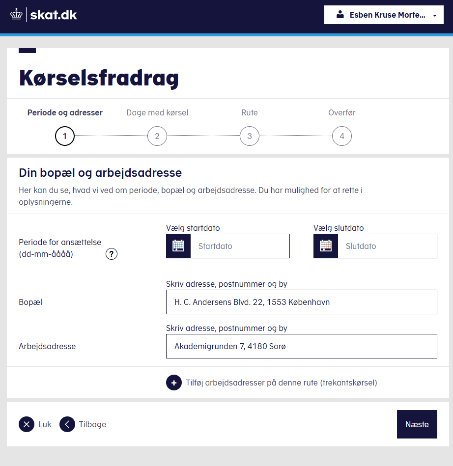

Risk expert platform
End-to-end ownership of the company's first product of its kind, reworking how underwriters handle cases.
Senior UX/UI Designer · Copenhagen
8 years of research, workshops, and tested interfaces, built on the belief that accessible design is simply good design.
End-to-end ownership of the company's first product of its kind, reworking how underwriters handle cases.
A high-complexity configuration product handling business rules, versioning, and traceability.
A case-creation flow for customer service reps: a modal that adapts its fields to what kind of case is being opened, from a First Notice of Loss to an enterprise policy request.
Authorization, server status, and communication services spanning multiple enterprise user types.
Embedded WCAG 2.2 AA as a system-level practice: wrote internal strategy and coached teams to build compliance into their process.

A self-service calculator citizens use to claim their commute tax deduction, prototyped end-to-end from discovery to developer handoff.
Tested every page under the Danish Tax Ministry umbrella with a colleague, reporting on accessibility compliance across the ministry's governing agencies, and served as the accessibility voice reviewing components for the shared component library.
Trained nurses on Sundhedsplatformen and analysed doctors' workflows to cut down time spent on patient data entry, freeing up more face-to-face time with patients.
Audited this site's own brutalist visual language (flat color blocks, thick borders, hard offset shadows, the Archivo/DM Sans/Space Mono type trio) and formalized it into a documented token scale and a reusable React component library.
Interviews, diary studies, analytics. Understanding people before designing for them.
Co-design sessions that align teams and surface constraints no brief ever mentions.
From sketch to clickable prototype at the fidelity that answers the specific question.
Moderated, unmoderated, heuristic. Never launch without evidence.
WCAG audit, assistive tech, real users with disabilities. Built in, not bolted on.
Every piece of information conveyed through colour also exists in text, pattern, or shape. Contrast is a baseline, not a finish line.
Every interactive element has a visible focus state. Skip links, logical tab order: not extras, but the interface itself.
Accessible names, landmark regions, live announcements. Tested with NVDA, JAWS, and VoiceOver before any prototype is done.
People with disabilities are included in every research round: not a separate study, but the same study as everyone else.
This page was tested against WCAG 2.2: markup, ARIA, color contrast (including focus indicators against their actual backgrounds), keyboard navigation, target sizes, and reduced-motion behaviour. A second pass measured the page against Nielsen Norman Group's 10 usability heuristics and found seven more issues, including a heading that screen readers announced as one run-together word, a case card whose white-on-orange text failed contrast, and every section below the hero rendering blank without JavaScript. 23 real issues found and fixed in total. Nothing here is a claim without a receipt.
opacity:0 in CSS, with only an IntersectionObserver able to show them. Without JavaScript, in print, and in renderers where the observer never runs, the page below the hero rendered blank. Verified: elements sitting inside the viewport stayed invisible whenever the observer did not fire. Content is now visible by default, and the hidden starting state is applied only once JavaScript confirms it can run. Print and reduced-motion force full visibility.E-mail: hello@esben.design